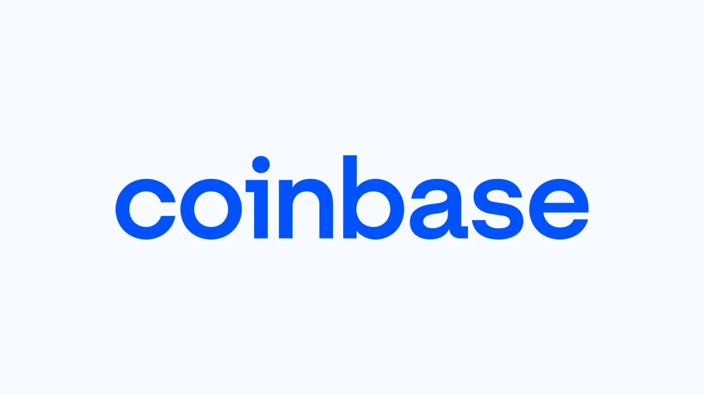

코인베이스 주주가 지금 가장 궁금해할 질문은 비트코인 가격이 더 오를지보다 “미국 규제의 문이 실제로 열리면 코인베이스 매출 구조가 얼마나 달라질까”에 가깝습니다. CLARITY Act, 즉 Digital Asset Market Clarity Act는 그 질문의 중심에 있습니다. 다만 이 법안은 아직 최종 법률이 아닙니다. 하원을 통과했고 상원 위원회 문턱도 넘었지만, 본회의와 최종 조문이라는 관문이 남아 있습니다.
그래서 코인베이스를 볼 때는 법안 이름만 보고 결론을 내리면 위험합니다. 규제 명확성은 토큰 상장, 파생상품, 예측시장, 수탁, 스테이블코인 결제, 온체인 앱 확장에 도움이 될 수 있습니다. 동시에 명확한 규칙은 더 많은 전통 금융회사와 브로커가 시장에 들어올 수 있는 초대장이기도 합니다. 코인베이스에 중요한 것은 법안 통과 자체보다 그 법안이 회사의 USDC, Base, 파생상품, 예측시장 매출을 얼마나 오래가는 숫자로 바꿔주는가입니다.
2026년 1분기 코인베이스는 거래량 시장 점유율이 8.6%로 회사 기준 사상 최고치였다고 밝혔습니다. 전 세계 암호화폐 자산의 12%를 보관하고, Coinbase 제품 안의 평균 USDC 보유액은 약 190억달러였다고 설명했습니다. 숫자는 강합니다. 하지만 같은 분기 순손실은 3억9,410만달러였고, 조정 EBITDA는 3억330만달러였습니다. 투자자는 성장 지표와 손익 지표를 한 화면에서 같이 봐야 합니다.
CLARITY 법안은 아직 본회의 문턱에 있습니다

Congress.gov 기준 H.R.3633은 2025년 7월 17일 하원을 통과했고, 2025년 9월 18일 상원 은행·주택·도시문제위원회에 회부된 것으로 표시되어 있습니다. 이후 2026년 5월 14일 상원 은행위원회는 Digital Asset Market Clarity Act를 15대 9로 가결해 상원 본회의로 넘겼다고 발표했습니다. 이 말은 법안이 죽은 이슈가 아니라 살아 있는 이슈라는 뜻입니다. 동시에 아직 최종 법률은 아니라는 뜻이기도 합니다.
상원 은행위원회 설명자료는 이 법안이 SEC와 CFTC 관할 경계를 명확히 하고, 공시 체계와 투자자 보호, 시장 조작 방지 장치를 마련한다고 설명합니다. 코인베이스에는 이 부분이 중요합니다. 그동안 암호자산이 증권인지 상품인지 애매하면 새 토큰 상장, 기관 고객 영업, 파생상품 설계, 온체인 상품 출시가 모두 법무 리스크를 안고 움직였습니다. 법안이 실제로 통과되면 이 불확실성이 일부 줄어들 수 있습니다.
다만 “일부 줄어든다”는 표현이 중요합니다. 법안의 최종 문구가 어디까지 허용하고, 어떤 공시와 등록을 요구하며, 디파이와 토큰화 증권, 스테이블코인 수익 배분을 어떻게 다루는지에 따라 코인베이스의 실제 수혜는 달라집니다. SEC가 2026년 3월 암호자산에 대한 연방 증권법 적용 해석을 발표한 것도 같은 흐름에 있습니다. 시장은 이제 규제 공백보다 규제의 세부 설계를 더 크게 가격에 반영할 가능성이 큽니다.
규제 명확성은 상장 코인보다 사업 범위를 바꿉니다
관련 영상
코인베이스와 CLARITY Act 논쟁을 설명하는 한국어 롱폼 영상
코인베이스에 CLARITY 법안이 중요한 이유는 단순히 더 많은 코인을 상장할 수 있어서가 아닙니다. 더 큰 변화는 사업 범위입니다. 거래소가 어떤 자산을 어떤 방식으로 취급할 수 있는지, 파생상품과 예측시장을 어디까지 연결할 수 있는지, 수탁과 결제 인프라가 어떤 규칙 아래 움직이는지가 정리되면 코인베이스는 “암호화폐 매매 앱”보다 훨씬 넓은 플랫폼으로 설명될 수 있습니다.
회사는 스스로를 Everything Exchange로 표현하고 있습니다. 거래, 수탁, 스테이블코인, 파생상품, 예측시장, 온체인 앱, 개발자 인프라를 한 계정과 한 보안 체계 아래 묶으려는 방향입니다. 이 전략은 규제 명확성이 있을 때 더 설득력을 얻습니다. 기관 고객은 규칙이 애매한 시장보다 허용 범위와 책임 범위가 분명한 시장에 더 큰 금액을 배치하기 쉽습니다.
하지만 법안은 코인베이스만을 위한 울타리가 아닙니다. 로빈후드 같은 브로커, CME 같은 거래소, 은행, 결제회사, 자산운용사도 명확한 규칙이 생기면 더 적극적으로 들어올 수 있습니다. 따라서 코인베이스가 얻는 이익은 “규제가 좋아진다”가 아니라 “규제가 좋아진 뒤에도 고객을 붙잡을 만큼 유동성, 보안, 제품 속도, 브랜드 신뢰가 강하다”에서 나와야 합니다. 규칙이 생기면 경쟁도 선명해집니다.
실적의 핵심은 거래량 의존도를 줄이는 속도입니다
코인베이스의 2026년 1분기 지표에서 가장 눈에 띄는 것은 거래량 점유율 8.6%입니다. 이는 시장이 흔들려도 코인베이스가 미국 규제권 안의 대표 거래 플랫폼으로 남아 있다는 신호입니다. 또 회사는 전 세계 암호화폐 자산의 12%를 보관한다고 밝혔습니다. 수탁 규모는 거래소 신뢰와 기관 고객 접근성을 보여주는 숫자입니다. 다만 거래량은 시장 가격과 투자 심리에 민감하기 때문에 이 숫자 하나만으로 안정성을 말하기는 어렵습니다.
그래서 USDC와 Base가 중요합니다. Coinbase 제품 안에 보관된 평균 USDC는 약 190억달러로 전체 USDC 유통량의 25% 이상이었습니다. Base는 전 세계 온체인 스테이블코인 거래량의 62%를 처리했고, 온체인 에이전트 스테이블코인 거래량의 90% 이상이 Base에서 발생했다고 회사는 밝혔습니다. 이 숫자들은 코인베이스가 단순 거래 수수료 회사에서 결제와 정산 인프라 회사로 확장될 수 있는지를 보여줍니다.
파생상품과 예측시장도 같은 맥락입니다. Coinbase 파생상품 거래량은 최근 12개월 기준 전년 대비 169% 증가했고, 리테일 파생상품 연환산 매출은 2억달러를 넘었습니다. 예측시장 매출은 미국 출시 뒤 두 달이 채 되지 않아 1억달러 이상의 연환산 매출에 도달했습니다. 이 사업들은 거래량 사이클을 완전히 없애지는 못하지만, 고객의 사용 빈도와 상품 폭을 넓힐 수 있습니다. 문제는 이 매출이 규제 허용 범위 안에서 얼마나 오래 유지되느냐입니다.
좋은 법안도 비용과 경쟁을 같이 부릅니다
CLARITY 법안이 코인베이스에 긍정적이라면, 그 이유는 법무 리스크가 줄고 제품 출시 경로가 선명해질 수 있기 때문입니다. 하지만 모든 명확성에는 비용이 따라옵니다. 더 엄격한 공시, 시장감시, 내부통제, 고객보호, 자금세탁방지 의무가 생기면 준법 비용이 커집니다. 코인베이스는 이미 보안과 규제 대응을 강점으로 내세우지만, 그 강점은 공짜가 아닙니다. 비용이 늘어나는 속도보다 신규 매출이 더 빨리 늘어야 합니다.
또 하나의 리스크는 스테이블코인 수익입니다. 코인베이스는 USDC 유통과 보관에서 중요한 위치를 갖고 있습니다. 그러나 스테이블코인 시장이 커질수록 은행, 결제회사, 핀테크, 카드 네트워크가 같은 영역을 노립니다. 규제 명확성이 커지면 기관 고객은 코인베이스를 더 편하게 쓸 수 있지만, 동시에 더 많은 대체 선택지도 갖게 됩니다. 코인베이스가 수익 배분과 고객 유지에서 얼마나 방어력을 보이는지가 관건입니다.
따라서 코인베이스 주주는 법안 뉴스가 나올 때마다 주가 반응만 볼 필요는 없습니다. 더 중요한 확인표는 상원 본회의 일정, 최종 조문, SEC와 CFTC 역할 배분, USDC on-platform 잔고, Base 거래량, 파생상품·예측시장 매출, 조정 EBITDA입니다. 이 지표들이 함께 좋아지면 CLARITY 법안은 단순 규제 뉴스가 아니라 코인베이스 사업 구조를 넓히는 촉매가 될 수 있습니다. 반대로 법안 기대만 오르고 신규 매출의 이익률이 약하면 주가는 다시 암호화폐 가격 사이클에 묶일 가능성이 큽니다.
결론은 단순합니다. 코인베이스는 CLARITY 법안의 대표 수혜 후보로 볼 수 있지만, 아직 법안은 완성되지 않았고 수혜도 자동으로 확정되지 않았습니다. 좋은 투자 판단은 “법안이 통과될까”에서 한 걸음 더 들어갑니다. 법안이 통과되든 지연되든, 코인베이스가 거래소에서 온체인 금융 인프라로 이동하며 반복 매출과 이익률을 동시에 증명하는지가 핵심입니다.